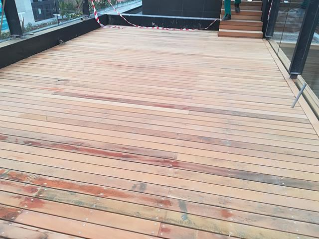

Renovation & woodworks in Oranjezicht
Oranjezicht has larger family homes with views, many with pools and outdoor living areas, plus some older character homes. We're often asked for family kitchens, pool decks and outdoor timber, and built-in wardrobes.
Examples of our work
From our projects across Cape Town.




Working in Oranjezicht
Oranjezicht sits high on the slopes of Table Mountain above the city, around De Waal Park. Homes are mostly larger family houses, many with pools, terraces and views over the City Bowl, alongside some older character homes and apartment blocks. The upper streets catch strong south-easter winds in summer, so outdoor timber, gates and doors need sturdy fixings. Kitchens and living areas here are often opened up to terraces, so indoor and outdoor finishes have to work together.
Kitchens · Built-in cupboards · Doors & garage doors · Furniture · Decks · Renovations →
Questions from Oranjezicht
Do you build pool decks in Oranjezicht?
Yes. We build hardwood pool decks, steps and surrounds designed for sun and water, sealed to last.
What timber lasts for a deck that faces the south-easter?
A dense hardwood with stainless steel screws and a good sealer. We fix boards so they can move without lifting.
Can you match a new kitchen to an older Oranjezicht home?
Yes. We can do shaker-style or classic doors that suit an older house, with modern hardware inside.
Can you design a kitchen for entertaining?
Yes. Islands with seating, a separate scullery and good storage for serving ware are common in our larger kitchen designs.